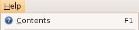

Imagine designing a car by a committee on a computer, and then sending the design directly to the assembly line without building a car first and letting anyone test-drive it.
Sun didn't let anyone read or tinker with their code but they wanted to be seen as a community-oriented effort, so, they created the Java Community Process where human-readable specifications describing Java were produced. Unfortunately, they focused on the specs and not on releasing software for people to try out so that the feedback came years later, or not at all. The biggest feedback that Sun would have received, but did not, was how insanely complicated their Java specs were. As an example, here is what a menu item looks like on the screen:

and here are the 456 functions a Java MenuItem class implements:1
action, actionPropertyChanged, add, addActionListener, addAncestorListener, addChangeListener, addComponentListener, addContainerListener, addFocusListener, addHierarchyBoundsListener, addHierarchyListener, addImpl, addInputMethodListener, addItemListener, addKeyListener, addMenuDragMouseListener, addMenuKeyListener, addMouseListener, addMouseMotionListener, addMouseWheelListener, addNotify, addPropertyChangeListener, addVetoableChangeListener, applyComponentOrientation, areFocusTraversalKeysSet, bounds, checkHorizontalKey, checkImage, checkVerticalKey, clone, coalesceEvents, computeVisibleRect, configurePropertiesFromAction, contains, countComponents, createActionListener, createActionPropertyChangeListener, createChangeListener, createImage, createItemListener, createToolTip, createVolatileImage, deliverEvent, disable, disableEvents, dispatchEvent, doClick, doLayout, enable, enableEvents, enableInputMethods, equals, finalize, findComponentAt, fireActionPerformed, fireItemStateChanged, fireMenuDragMouseDragged, fireMenuDragMouseEntered, fireMenuDragMouseExited, fireMenuKeyPressed, fireMenuKeyReleased, fireMenuKeyTyped, firePropertyChange, fireStateChanged, fireVetoableChange, getAccelerator, getAccessibleContext, getAction, getActionCommand, getActionForKeyStroke, getActionListeners, getActionMap, getAlignmentX, getAlignmentY, getAncestorListeners, getAutoscrolls, getBackground, getBaseline, getBaselineResizeBehavior, getBorder, getBounds, getChangeListeners, getClass, getClientProperty, getColorModel, getComponent, getComponentAt, getComponentCount, getComponentGraphics, getComponentListeners, getComponentOrientation, getComponentPopupMenu, getComponents, getComponentZOrder, getConditionForKeyStroke, getContainerListeners, getCursor, getDebugGraphicsOptions, getDefaultLocale, getDisabledIcon, getDisabledSelectedIcon, getDisplayedMnemonicIndex, getDropTarget, getFocusCycleRootAncestor, getFocusListeners, getFocusTraversalKeys, getFocusTraversalKeysEnabled, getFocusTraversalPolicy, getFont, getFontMetrics, getForeground, getGraphics, getGraphicsConfiguration, getHeight, getHideActionText, getHierarchyBoundsListeners, getHierarchyListeners, getHorizontalAlignment, getHorizontalTextPosition, getIcon, getIconTextGap, getIgnoreRepaint, getInheritsPopupMenu, getInputContext, getInputMap, getInputMethodListeners, getInputMethodRequests, getInputVerifier, getInsets, getItemListeners, getKeyListeners, getLabel, getLayout, getListeners, getLocale, getLocation, getLocationOnScreen, getMargin, getMaximumSize, getMenuDragMouseListeners, getMenuKeyListeners, getMinimumSize, getMnemonic, getModel, getMouseListeners, getMouseMotionListeners, getMousePosition, getMouseWheelListeners, getMultiClickThreshhold, getName, getNextFocusableComponent, getParent, getPeer, getPopupLocation, getPreferredSize, getPressedIcon, getPropertyChangeListeners, getRegisteredKeyStrokes, getRolloverIcon, getRolloverSelectedIcon, getRootPane, getSelectedIcon, getSelectedObjects, getSize, getSubElements, getText, getToolkit, getToolTipLocation, getToolTipText, getTopLevelAncestor, getTransferHandler, getTreeLock, getUI, getUIClassID, getVerifyInputWhenFocusTarget, getVerticalAlignment, getVerticalTextPosition, getVetoableChangeListeners, getVisibleRect, getWidth, getX, getY, gotFocus, grabFocus, handleEvent, hasFocus, hashCode, hide, imageUpdate,fireMenuDragMouseReleased isBorderPainted, init, insets, inside, invalidate, isAncestorOf, isArmed, isBackgroundSet, isContentAreaFilled, isCursorSet, isDisplayable, isDoubleBuffered, isEnabled, isFocusable, isFocusCycleRoot, isFocusOwner, isFocusPainted, isFocusTraversable, isFocusTraversalPolicyProvider, isFocusTraversalPolicySet, isFontSet, isForegroundSet, isLightweight, isLightweightComponent, isManagingFocus, isMaximumSizeSet, isMinimumSizeSet, isOpaque, isOptimizedDrawingEnabled, isPaintingForPrint, isPaintingTile, isPreferredSizeSet, isRequestFocusEnabled, isRolloverEnabled, isSelected, isShowing, isValid, isValidateRoot, isVisible, keyDown, keyUp, layout, list, locate, location, lostFocus, menuSelectionChanged, minimumSize, mouseDown, mouseDrag, mouseEnter, mouseExit, mouseMove, mouseUp, move, nextFocus, notify, notifyAll, paint, paintAll, paintBorder, paintChildren, paintComponent, paintComponents, paintImmediately, paramString, postEvent, preferredSize, prepareImage, print, printAll, printBorder, printChildren, printComponent, printComponents, processComponentEvent, processComponentKeyEvent, processContainerEvent, processEvent, processFocusEvent, processHierarchyBoundsEvent, processHierarchyEvent, processInputMethodEvent, processKeyBinding, processKeyEvent, processMenuDragMouseEvent, processMenuKeyEvent, processMouseEvent, processMouseMotionEvent, processMouseWheelEvent, putClientProperty, registerKeyboardAction, remove, removeActionListener, removeAll, removeAncestorListener, removeChangeListener, removeComponentListener, removeContainerListener, removeFocusListener, removeHierarchyBoundsListener, removeHierarchyListener, removeInputMethodListener, removeItemListener, removeKeyListener, removeMenuDragMouseListener, removeMenuKeyListener, removeMouseListener, removeMouseMotionListener, removeMouseWheelListener, removeNotify, removePropertyChangeListener, removeVetoableChangeListener, repaint, requestDefaultFocus, requestFocus, requestFocusInWindow, resetKeyboardActions, reshape, resize, revalidate, scrollRectToVisible, setAccelerator, setAction, setActionCommand, setActionMap, setAlignmentX, setAlignmentY, setArmed, setAutoscrolls, setBackground, setBorder, setBorderPainted, setBounds, setComponentOrientation, setComponentPopupMenu, setComponentZOrder, setContentAreaFilled, setCursor, setDebugGraphicsOptions, setDefaultLocale, setDisabledIcon, setDisabledSelectedIcon, setDisplayedMnemonicIndex, setDoubleBuffered, setDropTarget, setEnabled, setFocusable, setFocusCycleRoot, setFocusPainted, setFocusTraversalKeys, setFocusTraversalKeysEnabled, setFocusTraversalPolicy, setFocusTraversalPolicyProvider, setFont, setForeground, setHideActionText, setHorizontalAlignment, setHorizontalTextPosition, setIcon, setIconTextGap, setIgnoreRepaint, setInheritsPopupMenu, setInputMap, setInputVerifier, setLabel, setLayout, setLocale, setLocation, setMargin, setMaximumSize, setMinimumSize, setMnemonic, setModel, setMultiClickThreshhold, setName, setNextFocusableComponent, setOpaque, setPreferredSize, setPressedIcon, setRequestFocusEnabled, setRolloverEnabled, setRolloverIcon, setRolloverSelectedIcon, setSelected, setSelectedIcon, setSize, setText, setToolTipText, setTransferHandler, setUI, setVerifyInputWhenFocusTarget, setVerticalAlignment, setVerticalTextPosition, setVisible, show, size, toString, transferFocus, transferFocusBackward, transferFocusDownCycle, transferFocusUpCycle, unregisterKeyboardAction, update, updateUI, validate, validateTree, wait
The list of functions the Swing Java MenuItem class implements, with bizarro names like “isFocusTraversalPolicyProvider” and “addVetoableChangeListener”. Imagine if you needed to become familiar with 456 things to use your oven.
Such bloated code is hard to understand and even harder to make reliable. And this is just the Swing class library's opinion of a menu item, one of three popular implementations of Java widgets, and supposedly an efficient one!
Java is plagued by too much complexity as you can see, and releasing specs instead of code is a big cause of this problem. In fact, many of the Java specs aren't widely used because they do not meet developers' needs, or they became heavily amended after they finally got into customers' hands, which was often years after the specs were originally written.2
Java was not growing carefully and organically, as Linux has done, by following the “ship early, ship often” methodology. A lot of people who hate Java do so because of its pervasive extraneous complexity.